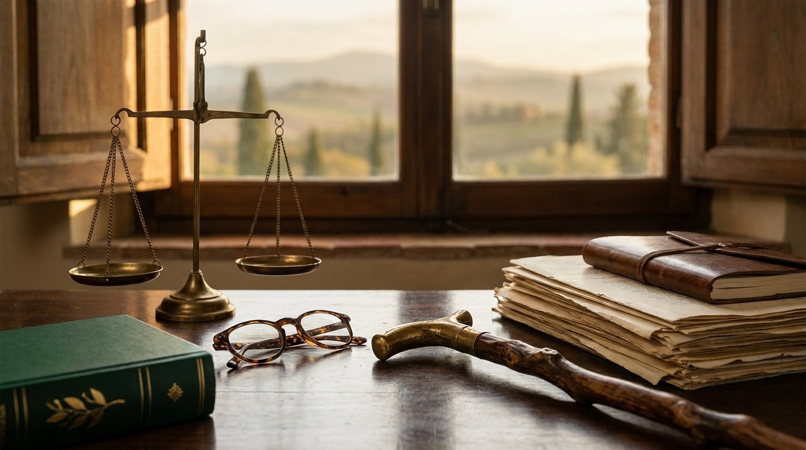

Invecchiamento attivo: la Legge 33/2023 e il ruolo del Terzo Settore
Auser ha portato al Governo una richiesta precisa: investire in modo strutturale su prevenzione, partecipazione e welfare di prossimità per la popolazione anziana. Al centro c'è la Legge 33/2023, delega in materia di politiche per gli anziani, e il ruolo degli enti del Terzo Settore nella sua attuazione. Una partita che interessa direttamente associazioni, cooperative e reti territoriali.

Il fatto
Il 10 giugno 2026 Auser Nazionale ha incontrato la Presidenza del Consiglio dei Ministri per sollecitare investimenti strutturali sulle politiche per l'invecchiamento attivo. La posizione è netta: la longevità non va trattata come un costo, ma come una risorsa per il Paese, a condizione che si finanzino prevenzione, partecipazione sociale e welfare di prossimità (i servizi erogati vicino alla persona, nel suo contesto di vita).
Nel confronto sono coinvolti anche cooperazione e sindacati dei pensionati. Il riferimento normativo principale è la Legge 33/2023, la legge delega che ha avviato la riforma dell'assistenza agli anziani.
Inquadramento normativo
La Legge 23 marzo 2023, n. 33 ("Deleghe al Governo in materia di politiche in favore delle persone anziane") non contiene norme immediatamente applicabili: è una legge delega. Significa che fissa principi e criteri direttivi e demanda al Governo l'emanazione di uno o più decreti legislativi attuativi.
Il primo decreto attuativo è il D.Lgs. 15 marzo 2024, n. 29, che ha disciplinato, tra l'altro, le misure per l'invecchiamento attivo, la promozione della partecipazione sociale degli anziani e il riconoscimento del valore delle attività di volontariato svolte dalle persone anziane stesse.
Il punto rilevante per il nostro settore è che la riforma assegna un ruolo esplicito agli enti del Terzo Settore (ETS), riconosciuti dal Codice del Terzo Settore (D.Lgs. 117/2017) come soggetti della co-programmazione e co-progettazione ai sensi dell'art. 55. In pratica: la legge non immagina che lo Stato eroghi tutto da solo, ma costruisca insieme agli ETS la rete dei servizi territoriali.
Implicazioni pratiche
Per un'associazione o una cooperativa attiva nel sociale, la richiesta di Auser non è solo rivendicazione sindacale. Indica dove si sposteranno, plausibilmente, le risorse e le occasioni di affidamento nei prossimi anni: assistenza domiciliare, attività di socializzazione, prevenzione della non autosufficienza, servizi di prossimità.
La leva operativa è la co-progettazione. L'art. 55 del Codice del Terzo Settore consente alle pubbliche amministrazioni di coinvolgere gli ETS nella definizione e nella realizzazione di interventi sociali, attraverso procedure diverse dall'appalto classico. Chi non è strutturato per partecipare a questi percorsi rischia di restare ai margini, anche in presenza di nuovi fondi.
C'è poi un tema di tracciabilità. L'accesso a finanziamenti pubblici strutturali comporta obblighi di rendicontazione stringenti e controlli. L'iscrizione al RUNTS (Registro Unico Nazionale del Terzo Settore) e la regolarità della documentazione contabile non sono formalità: sono il presupposto per concorrere.
Infine, l'attuazione della delega è ancora in corso. Ulteriori decreti e atti di indirizzo possono modificare il quadro. Monitorare l'evoluzione normativa è parte integrante della pianificazione.
Cosa fare in concreto
- Verificate l'iscrizione al RUNTS e l'allineamento dello statuto alle attività di interesse generale previste dall'art. 5 del Codice del Terzo Settore, in particolare quelle socio-assistenziali.
- Mappate gli avvisi pubblici e i percorsi di co-programmazione attivati dal vostro Comune o Ambito Territoriale Sociale, attivandovi prima della pubblicazione dei bandi.
- Strutturate da subito un sistema di rendicontazione tracciabile dei costi e delle attività, idoneo a reggere i controlli sui fondi pubblici.
- Valutate forme di rete o aggregazione (ATS, reti associative) per partecipare a progettazioni di scala superiore alla singola realtà.
- Seguite l'emanazione dei decreti attuativi della Legge 33/2023, perché definiranno requisiti e ambiti di intervento concreti.
Conclusione
La direzione è chiara: il legislatore affida al Terzo Settore un ruolo non residuale nelle politiche per l'invecchiamento. Tradurre questo in opportunità reali dipende dalla capacità degli enti di presentarsi in regola, organizzati e pronti a co-progettare. Consigliamo di non attendere i bandi per attrezzarsi, ma di lavorare sin d'ora sui requisiti formali e gestionali.
---
*Contributo informativo a cura di Tamburro & Partners - Avv. Giuseppe Tamburro. Non costituisce parere legale.*
Ogni ente del terzo settore ha la sua storia.
Se rappresenti un ETS e vuoi un confronto su governance, RUNTS o fiscalità, scrivi allo studio. Ti rispondiamo entro un giorno lavorativo.